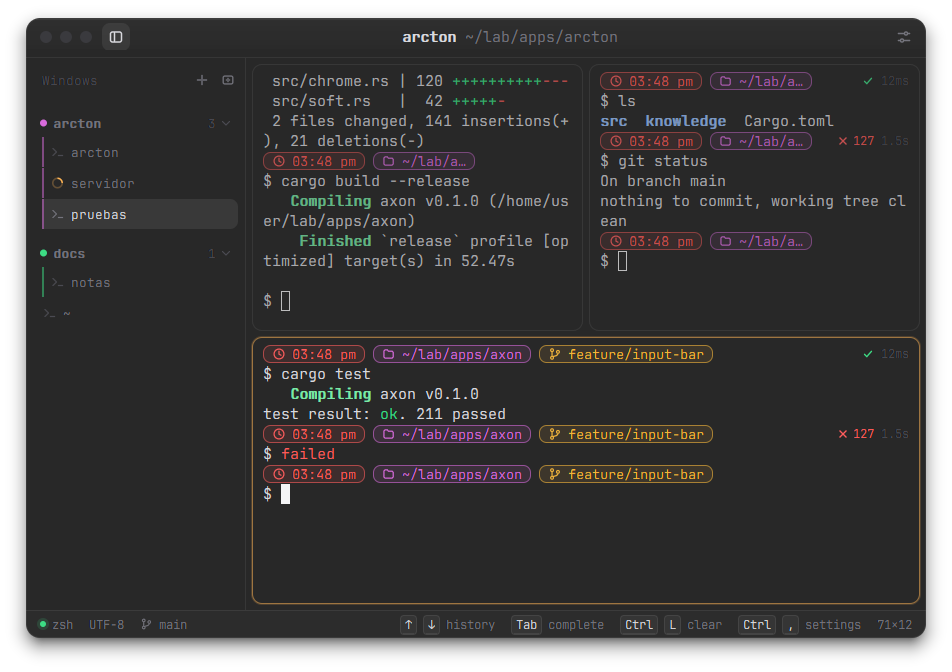
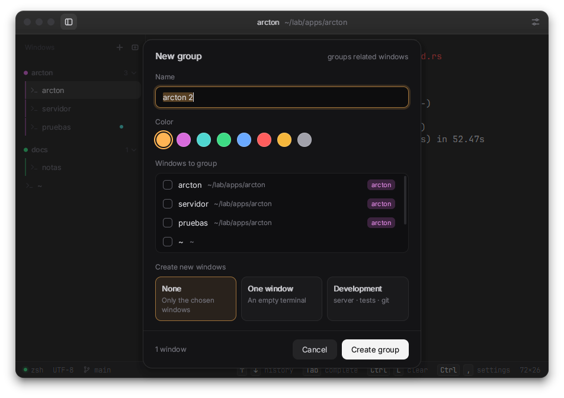
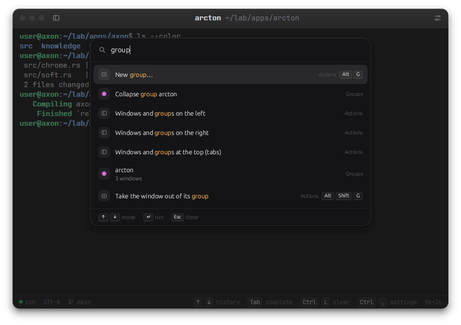
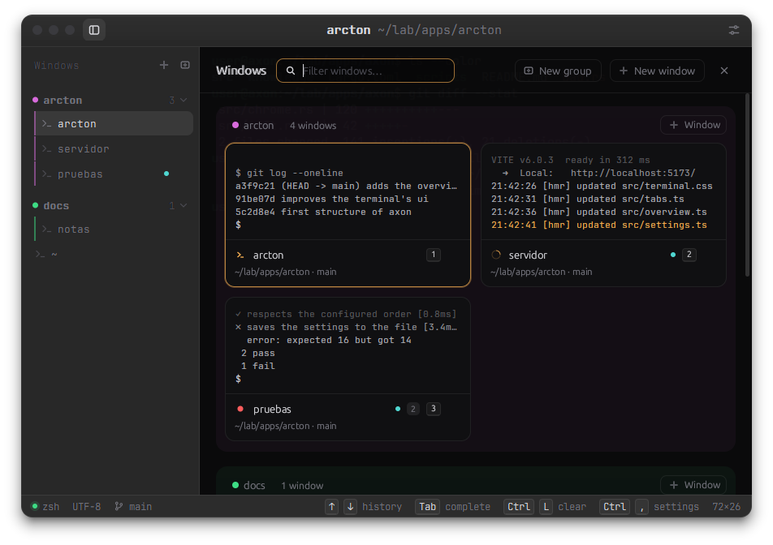
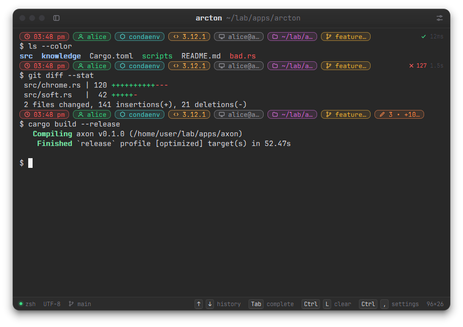
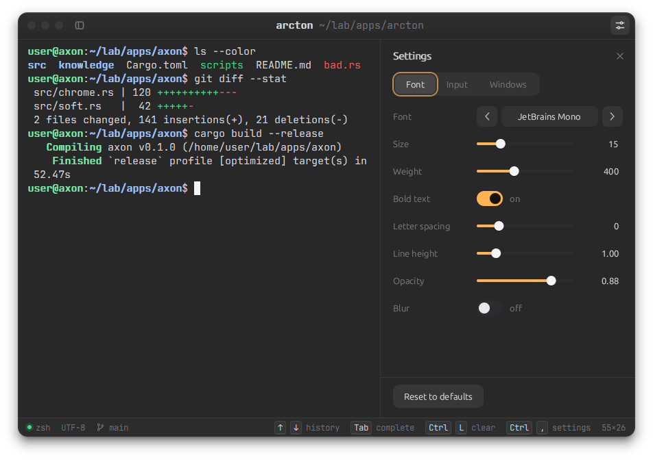

Its own Wayland client
No toolkit, no Vulkan or GL: the grid is painted on the CPU straight into a wl_shm buffer. X11 gets a
winit + wgpu fallback.
Native terminal · Linux · Rust
axon draws itself: its own Wayland client and a CPU renderer that paints only the rows that changed into shared memory, with no GPU stack loaded. Windows in groups shown side by side, a command palette, prompt chips, and 0 % CPU while nothing happens.
$ curl -fsSL https://iv44n.github.io/axon/install.sh | sh
Linux on x86_64 or aarch64, glibc 2.35 or newer. Installs under ~/.local with a launcher entry.
Other ways

Every picture on this page is a frame from the real renderer, with alpha: the colours behind the glass are this page.
RSS on the default Wayland backend with JetBrains Mono; Ryzen 5 5600H, GNOME 50, 2026-11-25. Method and history in the README's benchmarks.
Features
Dark translucent glass with hairlines instead of panes; every pixel of the frame is computed, no images. The rest is about getting around many shells quickly.
Windows live in a panel at the left or right, or as tabs in the title bar. Put them in coloured groups and the group becomes a split view: columns, rows or an automatic grid.

Actions, windows and groups in one list, ranked as you type, each with its shortcut. Use it to learn the keys, then stop needing it.

Every window as a card with the last rows of its terminal, in a section per group. Filter by name, directory, group or the text on screen; drag a card to another group.

An opt-in row of chips on the line above where you type: time, user, directory, git branch and changes, conda or venv, pyenv, Kubernetes. Your shell still edits the line; when a command finishes, its chips get a check or a cross and how long it took.
bash works with nothing to configure; zsh and fish take one line:
eval "$(axon shell-init zsh)".

Ctrl, docks the settings next to the grid, so you judge the font on your own terminal
while you change it. No Save button: every change goes to ~/.config/axon/config.toml at once,
keeping your comments.
Or edit the file by hand and press CtrlShiftR.

No toolkit, no Vulkan or GL: the grid is painted on the CPU straight into a wl_shm buffer. X11 gets a
winit + wgpu fallback.
vim, tmux, htop and less behave, mouse included (xterm 1000/1002/1003, SGR), thanks to
alacritty_terminal.
Glyphs supersampled six times, hinted to whole pixel rows and drawn with LCD sub-pixel coverage.
No continuous redraw and no blinking cursor: with nothing to do, axon does not wake up.
The interface follows your locale, or [ui] language.
axon config writes every setting, commented. Our own small parser, no extra crates.
Install
The installer downloads the release for your machine from GitHub, checks its SHA-256 and installs the binary, a launcher entry and the icon. Nothing outside the prefix is touched.
Installs the latest release under ~/.local. Add options after sh -s --.
$ curl -fsSL https://iv44n.github.io/axon/install.sh | sh
Download axon-x86_64-linux.tar.gz (or aarch64) from
Releases; the bundle installs itself.
$ tar xzf axon-x86_64-linux.tar.gz $ axon-x86_64-linux/install.sh
Needs a recent stable Rust (2024 edition). Builds with fat LTO, then installs the same files.
$ git clone https://github.com/Iv44n/axon $ axon/scripts/install.sh
--prefix DIR | Where to install. /usr/local installs for everyone (it asks for sudo). |
--version v0.1.0 | A given release instead of the latest. |
--uninstall | Removes what it installed; your settings stay. |
$ curl -fsSL https://iv44n.github.io/axon/install.sh | sh -s -- --prefix /usr/local
libxkbcommon.so.0 (every Wayland desktop has it). On X11, axon falls back to winit + wgpu, which needs a Vulkan or GL driver.AXON_FONT.Shortcuts
The full table, with the mouse, is in the README.